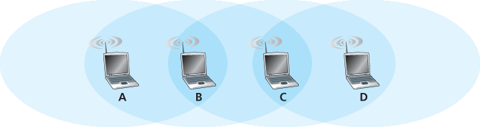

家庭作业问题和疑问#
Homework Problems and Questions
- Section 7.1
R1. What does it mean for a wireless network to be operating in “infrastructure mode”? If the network is not in infrastructure mode, what mode of operation is it in, and what is the difference between that mode of operation and infrastructure mode?
R2. What are the four types of wireless networks identified in our taxonomy in Section 7.1 ? Which of these types of wireless networks have you used?
- Section 7.2
R3. What are the differences between the following types of wireless channel impairments: path loss, multipath propagation, interference from other sources?
R4. As a mobile node gets farther and farther away from a base station, what are two actions that a base station could take to ensure that the loss probability of a transmitted frame does not increase?
- Sections 7.3 and 7.4
R5. Describe the role of the beacon frames in 802.11.
R6. True or false: Before an 802.11 station transmits a data frame, it must first send an RTS frame and receive a corresponding CTS frame.
R7. Why are acknowledgments used in 802.11 but not in wired Ethernet?
R8. True or false: Ethernet and 802.11 use the same frame structure.
R9. Describe how the RTS threshold works.
R10. Suppose the IEEE 802.11 RTS and CTS frames were as long as the standard DATA and ACK frames. Would there be any advantage to using the CTS and RTS frames? Why or why not?
R11. Section 7.3.4 discusses 802.11 mobility, in which a wireless station moves from one BSS to another within the same subnet. When the APs are interconnected with a switch, an AP may need to send a frame with a spoofed MAC address to get the switch to forward the frame properly. Why?
R12. What are the differences between a master device in a Bluetooth network and a base station in an 802.11 network?
R13. What is meant by a super frame in the 802.15.4 Zigbee standard?
R14. What is the role of the “core network” in the 3G cellular data architecture?
R15. What is the role of the RNC in the 3G cellular data network architecture? What role does the RNC play in the cellular voice network?
R16. What is the role of the eNodeB, MME, P-GW, and S-GW in 4G architecture?
R17. What are three important differences between the 3G and 4G cellular architectures?
- Sections 7.5 and 7.6
R18. If a node has a wireless connection to the Internet, does that node have to be mobile? Explain. Suppose that a user with a laptop walks around her house with her laptop, and always accesses the Internet through the same access point. Is this user mobile from a network standpoint? Explain.
R19. What is the difference between a permanent address and a care-of address? Who assigns a care-of address?
R20. Consider a TCP connection going over Mobile IP. True or false: The TCP connection phase between the correspondent and the mobile host goes through the mobile’s home network, but the data transfer phase is directly between the correspondent and the mobile host, bypassing the home network.
- Section 7.7
R21. What are the purposes of the HLR and VLR in GSM networks? What elements of mobile IP are similar to the HLR and VLR?
R22. What is the role of the anchor MSC in GSM networks?
- Section 7.8
R23. What are three approaches that can be taken to avoid having a single wireless link degrade the performance of an end-to-end transport-layer TCP connection?
Problems#
P1. Consider the single-sender CDMA example in Figure 7.5 . What would be the sender’s output (for the 2 data bits shown) if the sender’s CDMA code were (1,−1,1,−1,1,−1,1,−1)?
P2. Consider sender 2 in Figure 7.6 . What is the sender’s output to the channel (before it is added to the signal from sender 1), Zi,m2?
P3. Suppose that the receiver in Figure 7.6 wanted to receive the data being sent by sender 2. Show (by calculation) that the receiver is indeed able to recover sender 2’s data from the aggregate channel signal by using sender 2’s code.
P4. For the two-sender, two-receiver example, give an example of two CDMA codes containing 1 and 21 values that do not allow the two receivers to extract the original transmitted bits from the two CDMA senders.
P5. Suppose there are two ISPs providing WiFi access in a particular café, with each ISP operating its own AP and having its own IP address block.
Further suppose that by accident, each ISP has configured its AP to operate over channel 11. Will the 802.11 protocol completely break down in this situation? Discuss what happens when two stations, each associated with a different ISP, attempt to transmit at the same time.
Now suppose that one AP operates over channel 1 and the other over channel 11. How do your answers change?
P6. In step 4 of the CSMA/CA protocol, a station that successfully transmits a frame begins the CSMA/CA protocol for a second frame at step 2, rather than at step 1. What rationale might the designers of CSMA/CA have had in mind by having such a station not transmit the second frame immediately (if the channel is sensed idle)?
P7. Suppose an 802.11b station is configured to always reserve the channel with the RTS/CTS sequence. Suppose this station suddenly wants to transmit 1,000 bytes of data, and all other stations are idle at this time. As a function of SIFS and DIFS, and ignoring propagation delay and assuming no bit errors, calculate the time required to transmit the frame and receive the acknowledgment.
P8. Consider the scenario shown in Figure 7.34 , in which there are four wireless nodes, A, B, C, and D. The radio coverage of the four nodes is shown via the shaded ovals; all nodes share the same frequency. When A transmits, it can only be heard/received by B; when B transmits, both A and C can hear/receive from B; when C transmits, both B and D can hear/receive from C; when D transmits, only C can hear/receive from D.

Figure 7.34 Scenario for problem P8
Suppose now that each node has an infinite supply of messages that it wants to send to each of the other nodes. If a message’s destination is not an immediate neighbor, then the message must be relayed. For example, if A wants to send to D, a message from A must first be sent to B, which then sends the message to C, which then sends the message to D. Time is slotted, with a message transmission time taking exactly one time slot, e.g., as in slotted Aloha. During a slot, a node can do one of the following: (i) send a message, (ii) receive a message (if exactly one message is being sent to it), (iii) remain silent. As always, if a node hears two or more simultaneous transmissions, a collision occurs and none of the transmitted messages are received successfully. You can assume here that there are no bit-level errors, and thus if exactly one message is sent, it will be received correctly by those within the transmission radius of the sender.
Suppose now that an omniscient controller (i.e., a controller that knows the state of every node in the network) can command each node to do whatever it (the omniscient controller) wishes, i.e., to send a message, to receive a message, or to remain silent. Given this omniscient controller, what is the maximum rate at which a data message can be transferred from C to A, given that there are no other messages between any other source/destination pairs?
Suppose now that A sends messages to B, and D sends messages to C. What is the combined maximum rate at which data messages can flow from A to B and from D to C?
Suppose now that A sends messages to B, and C sends messages to D. What is the combined maximum rate at which data messages can flow from A to B and from C to D?
Suppose now that the wireless links are replaced by wired links. Repeat questions (a) through (c) again in this wired scenario.
Now suppose we are again in the wireless scenario, and that for every data message sent from source to destination, the destination will send an ACK message back to the source (e.g., as in TCP). Also suppose that each ACK message takes up one slot. Repeat questions (a)–(c) above for this scenario.
P9. Describe the format of the 802.15.1 Bluetooth frame. You will have to do some reading outside of the text to find this information. Is there anything in the frame format that inherently limits the number of active nodes in an 802.15.1 network to eight active nodes? Explain.
P10. Consider the following idealized LTE scenario. The downstream channel (see Figure 7.21 ) is slotted in time, across F frequencies. There are four nodes, A, B, C, and D, reachable from the base station at rates of 10 Mbps, 5 Mbps, 2.5 Mbps, and 1 Mbps, respectively, on the downstream channel. These rates assume that the base station utilizes all time slots available on all F frequencies to send to just one station. The base station has an infinite amount of data to send to each of the nodes, and can send to any one of these four nodes using any of the F frequencies during any time slot in the downstream sub-frame.
What is the maximum rate at which the base station can send to the nodes, assuming it can send to any node it chooses during each time slot? Is your solution fair? Explain and define what you mean by “fair.”
If there is a fairness requirement that each node must receive an equal amount of data during each one second interval, what is the average transmission rate by the base station (to all nodes) during the downstream sub-frame? Explain how you arrived at your answer.
Suppose that the fairness criterion is that any node can receive at most twice as much data as any other node during the sub-frame. What is the average transmission rate by the base station (to all nodes) during the sub-frame? Explain how you arrived at your answer.
P11. In Section 7.5 , one proposed solution that allowed mobile users to maintain their IP addresses as they moved among foreign networks was to have a foreign network advertise a highly specific route to the mobile user and use the existing routing infrastructure to propagate this information throughout the network. We identified scalability as one concern. Suppose that when a mobile user moves from one network to another, the new foreign network advertises a specific route to the mobile user, and the old foreign network withdraws its route. Consider how routing information propagates in a distance-vector algorithm (particularly for the case of interdomain routing among networks that span the globe).
Will other routers be able to route datagrams immediately to the new foreign network as soon as the foreign network begins advertising its route?
Is it possible for different routers to believe that different foreign networks contain the mobile user?
Discuss the timescale over which other routers in the network will eventually learn the path to the mobile users.
P12. Suppose the correspondent in Figure 7.23 were mobile. Sketch the additional network- layer infrastructure that would be needed to route the datagram from the original mobile user to the (now mobile) correspondent. Show the structure of the datagram(s) between the original mobile user and the (now mobile) correspondent, as in Figure 7.24 .
P13. In mobile IP, what effect will mobility have on end-to-end delays of datagrams between the source and destination?
P14. Consider the chaining example discussed at the end of Section 7.7.2 . Suppose a mobile user visits foreign networks A, B, and C, and that a correspondent begins a connection to the mobile user when it is resident in foreign network A. List the sequence of messages between foreign agents, and between foreign agents and the home agent as the mobile user moves from network A to network B to network C. Next, suppose chaining is not performed, and the correspondent (as well as the home agent) must be explicitly notified of the changes in the mobile user’s care-of address. List the sequence of messages that would need to be exchanged in this second scenario.
P15. Consider two mobile nodes in a foreign network having a foreign agent. Is it possible for the two mobile nodes to use the same care-of address in mobile IP? Explain your answer.
P16. In our discussion of how the VLR updated the HLR with information about the mobile’s current location, what are the advantages and disadvantages of providing the MSRN as opposed to the address of the VLR to the HLR?